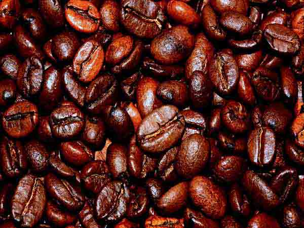

We opened 3 Sisters bakeshop in the summer of 2011. Wow! We tried to do it quietly so we could see what kind of staffing would be required and how much product we would need daily. However we were swamped from the moment we opened. Fortunately everyone seemed willing to be patient as we struggled through our first few months. We learned quickly that we were lucky to be in this community with so many kind and supportive customers. We thank you and hope we can meet your expectations.
We are asked quite often if 3 Sisters makes all the baking it sells. One of the first decisions we had to make was whether to bake everything ourselves or bring in products from other bakers. We decided that we were confident in making a little over half the products we wanted to offer our customers, but others did certain products so superbly that, at this point, we couldn't match their quality or expertise. Since our objective was to bring our customers the best of everything, we decided to offer a mix of our baking with products from other bakers. We therefore chose to call 3 Sisters a "bakeshop", implying a store that sold baking, rather than a "bakery", which we felt would suggest everything in our store was baked in our own kitchen. We also happily serve gluten free products.
When we opened 3 Sisters we sold only Art-Is-In bread which proved to be very popular with our customers. Then in the spring of 2013 Art-Is-In decided to end their wholesale business and as a result, 3 Sisters now primarily sells True Loaf bread from a small family run Ottawa business. While it is a different than Art-Is-In bread, we feel it is equally exceptional.
We make chicken, beef and black forest ham paninis each day. Usually we have BLT's available and occasionally we will offer a tuna melt. We believe in using only qualtiy ingredients. We generally try to use organic tomatoes, baby arugula and balderson cheddar. We will not use deli chicken or beef. Our breakfast paninis begin with a fresh omelette plus bacon, tomatoes, cheddar cheese and Boston lettuce.
One of our first ideas was to create an interesting destination for all the families who go for a warm summer night's walk. What could be better than some good ice cream. We learned quickly that quality ice cream was not all that simple to find. We won't share here what we discovered but leave it that you wouldn't be pleased if you knew the ingredients of much of the ice cream available on the market. Then we happened on Lois N' Frima's home made ice cream. Their slogan, "It's not what we put into our ice cream. It's what we don't put in." That really said it all. Frima has spent 27 years working on the science and art of ice cream making. She knows her subject and creates the highest quality ice cream we could find in Canada. When you make such a high quality product, it's not inexpensive to make. However we have tried to price their product so the evening walk we referred to will not be too costly.
As with all the products we are presently selling at 3 Sisters, we did a lot of research to find what we considered to be the best coffee available. We ended up choosing Francesco's coffee which we believe is one of the best anywhere in North America. You can read for yourself the history of the company going back over a hundred years to Mondovi, a small town in the northern part of Italy. Pietro Comino, the grandson of the man who first started roasting coffee, is a passionate and knowledgeable coffee maker and we are proud to be working with him to bring you such a fine beverage. Come in for a sample. We have a bold, a mild organic and a decaffeinated. We have lattes, cappuccinos, mochas, americanos and iced frappuccinos.
 1791 Kilborn Avenue
Ottawa, Ontario
K1H 6N1
613-695-9122
Now open 7 days a week!